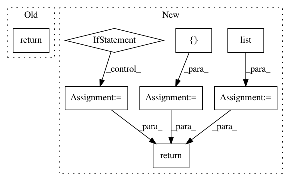

97031ed8f6afaf26a21dd98bb0bfdb4cacc65ca2,keras/layers/wrappers.py,Bidirectional,compute_output_shape,#Bidirectional#Any#,277
Before Change
elif self.merge_mode == "concat":
shape = list(self.forward_layer.compute_output_shape(input_shape))
shape[-1] *= 2
return tuple(shape)
elif self.merge_mode is None:
return [self.forward_layer.compute_output_shape(input_shape)] * 2
def call(self, inputs, training=None, mask=None):
After Change
def compute_output_shape(self, input_shape):
output_shape = self.forward_layer.compute_output_shape(input_shape)
if self.return_state:
state_shape = output_shape[1:]
output_shape = output_shape[0]
if self.merge_mode == "concat":
output_shape = list(output_shape)
output_shape[-1] *= 2
output_shape = tuple(output_shape)
elif self.merge_mode is None:
output_shape = [output_shape] * 2
if self.return_state:
if self.merge_mode is None:
return output_shape + state_shape * 2
return [output_shape] + state_shape * 2
return output_shape
def call(self, inputs, training=None, mask=None, initial_state=None):
In pattern: SUPERPATTERN
Frequency: 3
Non-data size: 8
Instances
Project Name: keras-team/keras
Commit Name: 97031ed8f6afaf26a21dd98bb0bfdb4cacc65ca2
Time: 2018-01-11
Author: myutwo150@users.noreply.github.com
File Name: keras/layers/wrappers.py
Class Name: Bidirectional
Method Name: compute_output_shape
Project Name: tensorflow/transform
Commit Name: d7a7dd6fe7106f6501e9995a92153f65238bbb47
Time: 2019-06-21
Author: tf-transform-dev@google.com
File Name: tensorflow_transform/analyzers.py
Class Name: QuantilesCombiner
Method Name: extract_output
Project Name: dit/dit
Commit Name: a5f32c41b01f8e058c414668d2f9b578300f45b0
Time: 2015-03-14
Author: ryangregoryjames@gmail.com
File Name: dit/multivariate/entropy.py
Class Name:
Method Name: entropy